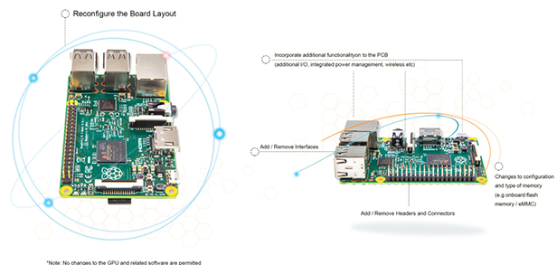

Blogs
Pellentesque habitant morbi tristique senectus et netus et malesuada
8 歲小 Coder 群募創業：提倡 Maker 精神

最近在 Kickstarter 上出現一款俏皮、可愛的智慧手錶，看起來與坊間的產品並無太多不同，但卻多了幾分童趣。仔細一看，才發現原來他們的創辦人 Omkar Govil-Nair 只有 8 歲！
這位 8 歲的小 Coder 年紀雖小，志氣卻不小，他說希望透過 O Watch 這個 3D
Read More
RASPBERRY PI還能這樣玩！接上MPR121讓水果也能打擊樂
將 Raspberry Pi 裝上可觸式HAT－MPR121，就能激發和多達12個電容性觸摸感應器的互動，只要透過觸碰其中之一的感應器電極，電容性觸摸感應會啟動並發出聲音。以往電容性觸摸感應總是用在電腦或手機上，但MPR121可以連接到你意想不到的物體上，可以是具有導電性的金屬，或是充滿水分的蔬果！以後想嘗試打擊樂不用再擔心沒有樂器了，家裡有水果就可以了～（但不要只顧著玩食物啊！）
Read More